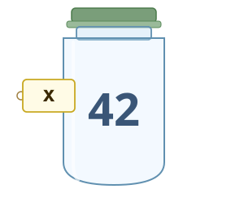
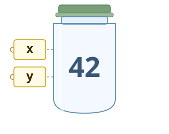
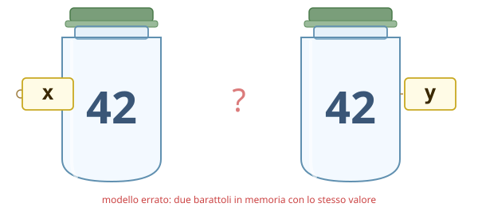
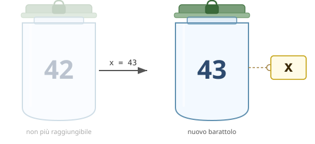
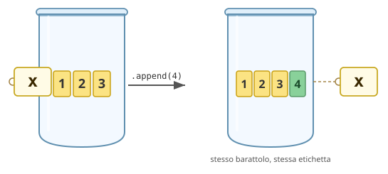

Modulo 06 · Memoria e passaggio degli argomenti
A fine lezione
- Sai spiegare la differenza tra una variabile che punta a un intero e una che punta a una lista?
- Sai prevedere cosa succede alla lista originale quando la passi a una funzione e la modifichi dentro?
- Sai distinguere una funzione pura da una funzione void?
- Sai riconoscere quando una funzione ha un effetto collaterale?
- Sai scrivere una versione in-place e una versione con copia di una stessa operazione su lista?
Variabili come nomi
Per immaginare lo stato dell'esecuzione, finora abbiamo usato la metafora dei barattoli: una variabile è come un barattolo con un nome scritto sopra, e dentro il barattolo si mette un valore.
Questo modello funziona per i programmi semplici, ma crea problemi non appena usiamo le liste.
Consideriamo questo programma:
x = 42
y = xx = 42crea un barattolo contenente42e attacca l'etichettax:

y = xattacca una seconda etichettayallo stesso barattolo — non crea un barattolo nuovo:

Dopo queste due istruzioni, x e y sono due etichette sullo stesso barattolo:
x ──┐
├──► [ 42 ]
y ──┘Si potrebbe pensare che Python crei due barattoli separati, ognuno con il proprio 42:

Ma non è così. Non ci sono due 42 in memoria — ce n'è uno solo, con due etichette attaccate allo stesso barattolo:
Possiamo verificarlo con id(), che restituisce un numero che identifica univocamente un oggetto durante l'esecuzione:
print(id(x)) # es. 4305765744
print(id(y)) # stesso numero: stesso oggettoCosa succede con y = y + 1
y = y + 1Il barattolo 42 è sigillato: non si può modificare. Python crea un nuovo barattolo con 43 e sposta l'etichetta y su di esso; l'etichetta x rimane sul barattolo 42.
x ──► [ 42 ]
y ──► [ 43 ] ← nuovo barattolo; [ 42 ] non è cambiatoprint(x) # 42 ← x non è cambiata
print(y) # 43
print(id(x)) # stesso di prima
print(id(y)) # numero diverso: barattolo diversoQuesto comportamento vale per tutti i tipi immutabili: interi, float, stringhe, booleani. Una volta creati, non cambiano. L'assegnazione sposta il riferimento, non modifica l'oggetto.
Le liste sono diverse: barattoli aperti
C'è una distinzione fondamentale tra due tipi di variabili:
- Tipi immutabili: barattoli sigillati (interi, stringhe, …) di cui non si può cambiare il contenuto; se serve un valore diverso, si crea un barattolo nuovo e si sposta l'etichetta

- Tipi mutabili: barattoli aperti (liste, …), a cui si può aggiungere o togliere contenuto senza creare un nuovo barattolo; chi ha un'etichetta su quel barattolo vede subito le modifiche.

Le liste sono mutabili: si possono modificare senza creare un nuovo oggetto.
lista = [1, 2, 3]
print(id(lista)) # es. 4372891456
lista.append(4)
print(id(lista)) # stesso numero: è ancora lo stesso oggetto, modificatoOperazioni in-place sulle liste
Queste operazioni modificano la lista esistente, senza crearne una nuova:
numeri = [3, 1, 4, 1, 5]
numeri.append(9) # aggiunge in fondo
numeri.sort() # ordina sul posto
numeri.reverse() # inverte sul posto
numeri.pop() # rimuove l'ultimo elemento
del numeri[0] # rimuove l'elemento all'indice 0Tutte restituiscono None — non producono una nuova lista, modificano quella esistente.
Alias: quando due nomi puntano allo stesso oggetto
a = [1, 2, 3]
b = ab = a non copia la lista. Copia solo il riferimento: ora a e b puntano allo stesso oggetto.
a ──┐
├──► [ 1, 2, 3 ]
b ──┘Quindi qualsiasi modifica fatta tramite b sarà visibile anche da a:
b.append(4)
print(a) # [1, 2, 3, 4] ← anche a è cambiata!Questo si chiama aliasing: due nomi diversi per lo stesso oggetto.
Come fare una copia vera
Per ottenere una lista indipendente dobbiamo costruirne una nuova elemento per elemento:
def copia_lista(originale):
nuova = []
i = 0
while i < len(originale):
nuova.append(originale[i])
i = i + 1
return nuovaa = [1, 2, 3]
b = copia_lista(a)Ora a e b puntano a oggetti diversi — due barattoli con lo stesso contenuto:
a ──► [ 1, 2, 3 ]
b ──► [ 1, 2, 3 ] ← barattolo nuovo, costruito elemento per elementoModificare b non tocca a, perché sono oggetti indipendenti:
b.append(4)
print(a) # [1, 2, 3] ← a non è cambiata
print(b) # [1, 2, 3, 4]Identità vs uguaglianza: is vs ==
a == bconfronta il contenuto —Truese i valori sono uguali;a is bconfronta l'identità —Truesolo seaebpuntano allo stesso oggetto.
a = [1, 2, 3]
b = copia_lista(a) # oggetto diverso, stesso contenuto
c = a # alias: stesso oggetto
print(a == b) # True ← contenuto uguale
print(a is b) # False ← oggetti diversi
print(a == c) # True ← contenuto uguale
print(a is c) # True ← stesso oggettoTabella di tracciamento: alias vs copia
a = [10, 20, 30]
b = a # alias
c = copia_lista(a) # copia
b[0] = 99
c[2] = 77| Passo | Codice sorgente | Stato del programma | Output |
|---|---|---|---|
| 1 | a = [10, 20, 30] | a → [10, 20, 30] | — |
| 2 | b = a | a,b → [10, 20, 30] (stesso oggetto) | — |
| 3 | c = copia_lista(a) | a,b → [10, 20, 30] · c → [10, 20, 30] (oggetto nuovo) | — |
| 4 | b[0] = 99 | a,b → [99, 20, 30] · c → [10, 20, 30] | — |
| 5 | c[2] = 77 | a,b → [99, 20, 30] · c → [10, 20, 77] | — |
| 6 | print(a) | a,b → [99, 20, 30] · c → [10, 20, 77] | [99, 20, 30] |
| 7 | print(c) | a,b → [99, 20, 30] · c → [10, 20, 77] | [10, 20, 77] |
Al passo 4 la modifica tramite b cambia anche a, perché puntano allo stesso barattolo. Al passo 5 la modifica su c non tocca a né b, perché c è un barattolo indipendente.
Esercizi: riferimenti e memoria
Cosa stampa questo programma?
Per ciascun frammento, compila la tabella riga per riga e scrivi l'output finale prima di eseguire il codice.
A1.
x = 5
y = x
y = y + 3
print(x)
print(y)| Passo | Codice sorgente | Stato del programma | Output |
|---|---|---|---|
| 1 | x = 5 | ||
| 2 | y = x | ||
| 3 | y = y + 3 | ||
| 4 | print(x) | ||
| 5 | print(y) |
A2.
a = [1, 2, 3]
b = a
b.append(4)
print(a)
print(b)| Passo | Codice sorgente | Stato del programma | Output |
|---|---|---|---|
| 1 | a = [1, 2, 3] | ||
| 2 | b = a | ||
| 3 | b.append(4) | ||
| 4 | print(a) | ||
| 5 | print(b) |
A3.
a = [1, 2, 3]
b = copia_lista(a)
b.append(4)
print(a)
print(b)| Passo | Codice sorgente | Stato del programma | Output |
|---|---|---|---|
| 1 | a = [1, 2, 3] | ||
| 2 | b = copia_lista(a) | ||
| 3 | b.append(4) | ||
| 4 | print(a) | ||
| 5 | print(b) |
A4.
a = [10, 20, 30]
b = a
a = [10, 20, 30]
b.append(99)
print(a)
print(b)Attenzione: al passo 3 a viene riassegnata — non modificata.
| Passo | Codice sorgente | Stato del programma | Output |
|---|---|---|---|
| 1 | a = [10, 20, 30] | ||
| 2 | b = a | ||
| 3 | a = [10, 20, 30] | ||
| 4 | b.append(99) | ||
| 5 | print(a) | ||
| 6 | print(b) |
Vero o falso?
Per ciascuna affermazione scrivi V o F e motiva la risposta.
- Dopo
x = 3ey = x, eseguirey = y + 1cambia anchex. - Dopo
a = [1, 2]eb = a, eseguireb.append(3)cambia anchea. - Dopo
a = [1, 2]eb = copia_lista(a), le due liste puntano allo stesso oggetto. - Se
a == balloraa is b. - Se
a is balloraa == b. a = [1, 2, 3]eb = [1, 2, 3]scritti su righe separate creano due riferimenti distinti.
Scrivere codice con il comportamento richiesto
Per ciascun esercizio scrivi un programma che produca esattamente l'output indicato. Verifica con print e, dove richiesto, con is.
B1. Inizializza una lista contenente i numeri 1, 2, 3. Crea una seconda variabile che punta alla stessa lista e usala per aggiungere 99. Stampa entrambe le variabili e verifica con is che siano lo stesso oggetto.
Output atteso:
[1, 2, 3, 99]
[1, 2, 3, 99]
TrueB2. Inizializza una lista contenente i numeri 1, 2, 3. Creane una copia indipendente e aggiungi 99 alla copia. Stampa entrambe e verifica con is che siano oggetti distinti.
Output atteso:
[1, 2, 3]
[1, 2, 3, 99]
FalseB3. Leggi numeri interi dall'input fino a quando l'utente inserisce 0. Salva in una lista solo i numeri pari. Poi crea una copia della lista e, nella copia, sostituisci ogni numero con il suo doppio. Stampa la lista originale e la copia.
Esempio:
Input: 4 7 2 9 6 0
Lista pari: [4, 2, 6]
Lista doppi: [8, 4, 12]B4. Leggi numeri interi dall'input fino a 0. Salva tutti i numeri in una lista. Crea una seconda lista che contiene solo i numeri maggiori della media. Stampa la lista originale e la lista filtrata. La lista originale non deve essere modificata.
Esempio:
Input: 3 8 2 10 5 0
Lista originale: [3, 8, 2, 10, 5]
Sopra la media: [8, 10]B4. Leggi numeri interi positivi dall'input fino a 0 (ignora i numeri negativi). Salva tutti i numeri in una lista. Crea una seconda lista che contiene solo i numeri maggiori della media e sostituisci questi numeri con -1 nella lista originale. Stampa la lista originale e la lista filtrata.
Esempio:
Input: 3 8 2 10 5 0
Lista originale: [3, -1, 2, -1, 5]
Sopra la media: [8, 10]Passaggio degli argomenti alle funzioni
Quando si chiama una funzione, Python associa i parametri formali agli oggetti passati come argomenti — esattamente come farebbe con =.
Tipi immutabili: il parametro è una copia locale
def incrementa(n):
n = n + 1
print("dentro:", n)
x = 10
incrementa(x)
print("fuori:", x)dentro: 11
fuori: 10n dentro la funzione inizia puntando allo stesso oggetto di x. Ma quando scriviamo n = n + 1, creiamo un nuovo oggetto e spostiamo solo n — x rimane invariata.
x ──┐
├──► [ 10 ] ← all'inizio puntano allo stesso oggetto
n ──┘
dopo n = n + 1:
x ──► [ 10 ]
n ──► [ 11 ] ← n ora punta a un nuovo oggettoTipi mutabili: il parametro punta allo stesso oggetto
def sostituisci_pari(lista):
i = 0
while i < len(lista):
if lista[i]%2==0:
lista[i] = 0
i = i + 1
return lista
numeri = [10, 11, 20, 21, 30, 31]
numeri_2 = sostituisci_pari(numeri)
print(numeri_2) # [0, 11, 0, 21, 0, 31]
print(numeri) # [0, 11, 0, 21, 0, 31] ← la lista originale è cambiata!Qui lista e numeri puntano allo stesso oggetto. Quando lista[i] = 0 modifica la lista, la modifica è visibile anche da numeri.
numeri ──┐
├──► [ 10, 11, 20, 21, 30, 31 ]
lista ──┘
dopo le modifiche dentro la funzione:
numeri ──┐
├──► [ 0, 11, 0, 21, 0, 31 ]
lista ──┘Effetti collaterali
L'esempio precedente mostra un comportamento sottile: sostituisci_pari riceve numeri come argomento, lo modifica attraverso il parametro lista, e la modifica è visibile anche fuori dalla funzione — senza che il codice chiamante lo abbia richiesto esplicitamente.
Una funzione ha un effetto collaterale quando modifica qualcosa al di fuori del proprio scope locale. Gli effetti collaterali più comuni sono:
- modificare un oggetto mutabile passato come parametro (liste, dizionari, …);
- modificare una variabile globale;
- stampare a schermo con
print; - scrivere su un file.
Effetti collaterali visibili e nascosti
Gli effetti collaterali sono utili quando vogliamo modificare una struttura condivisa senza doverla copiare.
Sono pericolosi quando chi chiama la funzione non sa che la lista verrà modificata. L'errore tipico:
def analisi(dati):
dati.sort() # effetto collaterale nascosto
media = sum(dati) / len(dati)
return media
numeri = [5, 3, 1, 4, 2]
risultato = analisi(numeri)
print(numeri) # [1, 2, 3, 4, 5] ← la lista è stata ordinata di nascosto!Il chiamante passa numeri aspettandosi solo la media — e si trova la lista riordinata senza averlo richiesto.
Reminder: Funzioni pure
Sintassi
def nome_funzione(parametro_1, ..., parametro_n):
# istruzioni
return espressionereturn espressioneè obbligatorio e produce il valore che la funzione restituisce.
Semantica della chiamata
Quando Python incontra nome_funzione(arg_1, ..., arg_n):
- valuta gli argomenti da sinistra a destra;
- assegna ogni valore al parametro corrispondente per posizione;
- esegue il corpo della funzione;
- quando incontra
return, valuta l'espressione e restituisce quel valore al chiamante; - la chiamata si sostituisce con il valore restituito — è un'espressione con un tipo.
media = somma_lista(dati) / len(dati) # il valore entra in un calcolo
print(somma_lista(dati)) # il valore viene passato a print
if somma_lista(dati) > 100: # il valore viene confrontato
...Principio di progetto
Una funzione pura non deve leggere né modificare variabili globali, né modificare gli oggetti ricevuti come parametri. Il risultato dipende esclusivamente dagli argomenti — chiamarla due volte con gli stessi argomenti produce sempre lo stesso risultato.
Python non lo impone: è una scelta del programmatore. Rispettarla rende le funzioni prevedibili, testabili e componibili.
Funzioni void
Problema: Vogliamo una funzione che raddoppi tutti gli elementi di una lista.
Tentativo con return (funzione pura):
def raddoppia(lista):
nuova = []
i = 0
while i < len(lista):
nuova.append(lista[i] * 2)
i = i + 1
return nuovaIn questo modo dobbiamo per forza assegnare di nuovo la variabile numeri per usare il valore restituito:
numeri = raddoppia(numeri)
print(numeri) # [2, 4, 6]Ma abbiamo visto che è possibile anche modificare direttamente la lista originale tramite una funzione e ottenere un comportamento del genere:
numeri = [1, 2, 3]
raddoppia(numeri) # effettua un'azione su numeri
print(numeri) # [2, 4, 6] ← lista modificata!Per fare ciò abbiamo bisogno di un nuovo tipo di funzioni: le funzioni void
Grazie al fatto che lista e numeri possono puntare allo stesso barattolo, possiamo modificare ogni elemento direttamente dall'interno della funzione usando l'assegnazione per indice:
def raddoppia_in_place(lista):
i = 0
while i < len(lista):
lista[i] = lista[i] * 2
i = i + 1numeri = [1, 2, 3]
raddoppia_in_place(numeri)
print(numeri) # [2, 4, 6] ← la lista originale è cambiataNon c'è return — non serve. La funzione non calcola un valore: produce un effetto sul barattolo condiviso. Questa è la struttura di tutte le funzioni void.
"void" non è una parola chiave Python (a differenza di C o Java) — è un termine convenzionale per descrivere questo comportamento.
Sintassi delle funzioni void
def nome_funzione(parametro_1, ..., parametro_n):
# istruzioni- non c'è
return; - Python restituisce implicitamente
None.
Semantica della chiamata void
Quando Python incontra nome_funzione(arg_1, ..., arg_n):
- valuta gli argomenti da sinistra a destra;
- assegna ogni valore al parametro corrispondente per posizione;
- esegue il corpo della funzione — gli effetti collaterali avvengono qui;
- raggiunta la fine del corpo, la funzione termina restituendo
None; - la chiamata è un'istruzione — non c'è un valore utile da riusare.
raddoppia_elementi(dati) # istruzione: corretto
risultato = raddoppia_elementi(dati) # risultato è None: sbagliato
if raddoppia_elementi(dati): # confronta None: sbagliato
...Le funzioni void sono il posto naturale per gli effetti collaterali. Il loro scopo è produrre un effetto nel mondo esterno — modificare una lista, stampare, scrivere su file — non calcolare un valore.
Riepilogo: quale tipo di funzione usare
| Vuoi... | Usa... |
|---|---|
| Calcolare un valore da riusare altrove | funzione pura |
| Stampare un risultato | funzione void |
| Modificare una lista in-place | funzione void |
| Produrre una nuova lista senza toccare l'originale | funzione pura |
Una distinzione didattica, non una regola di Python
La distinzione tra funzione pura e funzione void è uno strumento per imparare a ragionare sul codice — non una regola imposta da Python. In Python non esiste nessuna parola chiave, nessun controllo, nessuna differenza sintattica: tutto si scrive con
def, e una funzione può restituire un valore, produrre effetti collaterali, o fare entrambe le cose insieme.
La libreria standard lo fa spesso:
# list.pop(): rimuove l'ultimo elemento E lo restituisce
numeri = [10, 20, 30]
ultimo = numeri.pop()
print(ultimo) # 30
print(numeri) # [10, 20] ← la lista è cambiata# sostituisci_pari: modifica la lista passata E la restituisce
def sostituisci_pari(lista):
i = 0
while i < len(lista):
if lista[i] % 2 == 0:
lista[i] = 0
i = i + 1
return lista
numeri = [10, 11, 20]
risultato = sostituisci_pari(numeri)
print(risultato) # [0, 11, 0]
print(numeri) # [0, 11, 0] ← stessa lista: risultato e numeri puntano allo stesso oggettoQuesti esempi esistono, e li incontrerete. La distinzione pura/void serve a costruire un'abitudine: quando scrivete una funzione, decidete cosa fa — calcola un valore o produce un effetto — e non mescolate i due ruoli senza una ragione precisa.
Esercizi
Tracciamento della memoria
Per ciascun frammento, compila la tabella passo per passo: indica lo stato di tutte le variabili dopo ogni istruzione e, se qualcosa viene stampato, scrivilo nella colonna output.
T1. Alias e modifica in-place.
a = [1, 2, 3]
b = a
b.append(4)
print(a)
print(b)
print(a is b)| Passo | Codice sorgente | Stato | Output |
|---|---|---|---|
| 1 | a = [1, 2, 3] | ||
| 2 | b = a | ||
| 3 | b.append(4) | ||
| 4 | print(a) | ||
| 5 | print(b) | ||
| 6 | print(a is b) |
T2. Copia esplicita e modifica.
a = [1, 2, 3]
b = copia_lista(a)
b.append(4)
print(a)
print(b)
print(a is b)(Usa la funzione copia_lista vista a lezione.)
| Passo | Codice sorgente | Stato | Output |
|---|---|---|---|
| 1 | a = [1, 2, 3] | ||
| 2 | b = copia_lista(a) | ||
| 3 | b.append(4) | ||
| 4 | print(a) | ||
| 5 | print(b) | ||
| 6 | print(a is b) |
T3. Passaggio di lista a funzione void.
def f(lista):
lista.append(99)
x = [10, 20]
f(x)
print(x)| Passo | Codice sorgente | Stato | Output |
|---|---|---|---|
| 1 | x = [10, 20] | ||
| 2 | chiama f(x) | ||
| 3 | lista.append(99) | ||
| 4 | fine f | ||
| 5 | print(x) |
T4. Tipo immutabile come parametro.
def h(n):
n = n + 1
return n
x = 5
y = h(x)
print(x)
print(y)| Passo | Codice sorgente | Stato | Output |
|---|---|---|---|
| 1 | x = 5 | ||
| 2 | chiama h(x) | ||
| 3 | n = n + 1 | ||
| 4 | return n | ||
| 5 | y = h(x) | ||
| 6 | print(x) | ||
| 7 | print(y) |
Scrivere funzioni pure
E1. Scrivi una funzione pura massimo(lista) che restituisce il valore massimo di una lista di interi.
E2. Scrivi una funzione pura conta(lista, valore) che restituisce quante volte valore compare in lista.
E3. Scrivi una funzione pura inverti(lista) che restituisce una nuova lista con gli elementi in ordine inverso, senza modificare quella originale.
E4. Scrivi una funzione pura rimuovi_duplicati(lista) che restituisce una nuova lista con gli stessi elementi ma senza ripetizioni (mantenendo l'ordine di prima apparizione).
rimuovi_duplicati([1, 2, 1, 3, 2, 4]) # → [1, 2, 3, 4]E5. Scrivi una funzione pura unisci(a, b) che restituisce una nuova lista con tutti gli elementi di a seguiti da tutti gli elementi di b, senza modificare né a né b.
E6. Scrivi una funzione pura filtra_pari(lista) che restituisce una nuova lista contenente solo i numeri pari.
Scrivere funzioni void
E7. Scrivi una funzione void inverti_in_place(lista) che inverte la lista modificandola direttamente, senza creare una lista nuova.
E8. Scrivi una funzione void azzera_negativi(lista) che sostituisce ogni numero negativo con 0 nella lista originale.
dati = [3, -1, 7, -4, 0]
azzera_negativi(dati)
print(dati) # [3, 0, 7, 0, 0]E9. Scrivi una funzione void moltiplica_elementi(lista, fattore) che moltiplica ogni elemento della lista per fattore, modificando la lista originale.
dati = [1, 2, 3, 4]
moltiplica_elementi(dati, 3)
print(dati) # [3, 6, 9, 12]E10. Scrivi una funzione void aggiungi_tutti(destinazione, sorgente) che aggiunge tutti gli elementi di sorgente in fondo a destinazione in-place, senza creare nuove liste.
a = [1, 2, 3]
b = [4, 5, 6]
aggiungi_tutti(a, b)
print(a) # [1, 2, 3, 4, 5, 6]
print(b) # [4, 5, 6] ← invariataImport e file di libreria
Scrivere sempre le stesse funzioni di supporto in ogni programma è scomodo. Python permette di mettere funzioni in un file separato — chiamato modulo o libreria — e di riusarle altrove con import.
Librerie locali
Un file Python può contenere funzioni da riusare in altri file della stessa cartella. Supponiamo di avere due file:
# utils.py
def somma_lista(lista):
totale = 0
i = 0
while i < len(lista):
totale = totale + lista[i]
i = i + 1
return totale
def inverti(lista):
risultato = []
i = len(lista) - 1
while i >= 0:
risultato.append(lista[i])
i = i - 1
return risultato# main.py
import utils
dati = [3, 1, 4, 1, 5]
print(utils.somma_lista(dati))
print(utils.inverti(dati))La sintassi utils.somma_lista(dati) si legge: "cerca la funzione somma_lista dentro il modulo utils". Il prefisso serve a evitare confusione quando due moduli diversi definiscono funzioni con lo stesso nome.
Regole da ricordare:
- il nome del modulo è il nome del file senza
.py; import utilscercautils.pynella stessa cartella del file che importa;- le funzioni importate si comportano esattamente come quelle definite nello stesso file — incluso il passaggio degli argomenti.
Librerie standard: random
Python viene distribuito con una collezione di librerie già pronte, chiamata libreria standard. Non contengono codice da scrivere: basta importarle.
Una delle più usate è random, che genera valori casuali:
import random
print(random.randint(1, 6)) # intero casuale tra 1 e 6 (inclusi)
print(random.random()) # float casuale tra 0.0 e 1.0Ogni chiamata a randint produce un risultato diverso — non è deterministica come le funzioni che abbiamo scritto finora.
Esempio: simulare dieci lanci di dado e raccogliere i risultati in una lista.
import random
def lanci_dado(n):
risultati = []
i = 0
while i < n:
risultati.append(random.randint(1, 6))
i = i + 1
return risultati
print(lanci_dado(10)) # es. [3, 1, 6, 2, 6, 4, 1, 5, 3, 2]random offre anche random.shuffle(lista), che mescola una lista in-place (funzione void):
import random
carte = [1, 2, 3, 4, 5, 6, 7, 8, 9, 10]
random.shuffle(carte)
print(carte) # ordine casualeEsercizi con random
L1. Scrivi una funzione conta_sei(n) che simula n lanci di un dado a sei facce e restituisce quante volte è uscito 6.
print(conta_sei(1000)) # es. 162 (circa 1/6 di 1000)L2. Scrivi una funzione lista_casuale(n, minimo, massimo) che restituisce una lista di n interi casuali compresi tra minimo e massimo.
print(lista_casuale(5, 1, 100)) # es. [47, 3, 82, 19, 61]L3. Usando random.shuffle, scrivi una funzione void mischia(lista) che mescola la lista originale. Poi scrivi una funzione pura mescolata(lista) che restituisce una nuova lista mescolata senza modificare l'originale.
dati = [1, 2, 3, 4, 5]
mischia(dati)
print(dati) # ordine casuale, originale modificata
nuova = mescolata(dati)
print(dati) # invariata
print(nuova) # ordine diverso